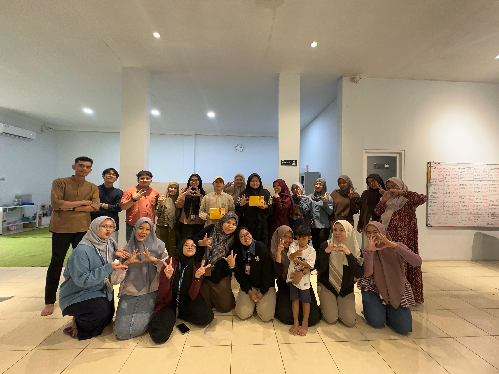

Perusahaan · 10 Januari 2026

PT Ketiara Aliran Rezeki terus menunjukkan perkembangan sebagai perusahaan teknologi pendidikan yang mengelola berbagai brand di bidang kompetisi akademik, pembelajaran, media, percetakan, dan kegiatan sosial.
Sejak berdiri, PT KAR secara konsisten memperluas jangkauan layanan ke berbagai provinsi di Indonesia, bekerja sama dengan sekolah, perguruan tinggi, dan mitra pendidikan lainnya untuk menghadirkan program yang relevan bagi generasi muda.
Ke depan, PT KAR berkomitmen untuk terus berinovasi dan memperluas ekosistem pendidikan yang berkualitas dan berkelanjutan.